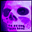

When one does not love too much, one does not love enough. --Pascal
SEX WITH FRIENDSTM is the world's first support group for LOVE GENIUSESTM who have flushed the war out of their love, but haven't yet washed that (wo)man right out of their hair.
Knowing the power of words but being unable to leash that silky strength for yourself is what drives LOVE GENIUSESTM to the SEX WITH FRIENDSTM weekly morning meetings, dynamic sit-arounds in rented mobile homes around the country where our SEX WITH FRIENDSTM writing fiends help you pen the ad guaranteed to attract the lover you want, deserve, and should have during your heavenly stay on Earth.
The personal ads below have been scientifically designed by our SEX WITH FRIENDSTM experts to attract potential partners who are committed to the art of compassionate lust and lusty compassion.
If you're a SBM or a DWF or a WWW or an SAM or any other acronmyn who WLTM a soul mate, a play mate, or an inmate for a LTR or just one session of souless sex, you're invited to plagiarize them for use as your own ad. Put 'em in your local newspaper! And let us know how it all comes out.
I am impossible
to live with . . . but then isn't everyone? I will drive you crazy . . . but in the most interesting ways possible. You don't want to get mixed up with me . . . unless you love to have every one of your certainties challenged and unless you get horny in the face of unimaginable adventures and unless you're ready to never be bored again.
Do you have
a dancer's body, a writer's mind, an artist's hands, and an underwear model's face? If so, you're probably too slick for me. I'm a down-to-earth magician who loves gritty reality far more than glittery fantasies. Like the skilled Japanese pottery-makers whose work is valued for its trademark blemishes, I thrive on life's imperfections. I'll love you for who you are, not who you might be someday.
James Thurber once said
of a ruined relationship, "Our love never ripened into friendship." But I promise you no one'll ever say that about me and you. I'm not just a flirtatious seducer lusting after your sex, sweetheart; I'm a multifaceted companion who wants to collaborate with every single one of your nooks and crannies. My goal in life is to be addicted to kissing my very best buddy.
Come into my
Soul Kitchen, baby. Slink into my Big Yumyum and let me stoke your forbidden pleasures. I've got goodies for you, sweetheart. I've got got honey kisses and dazzle-nectar, ambrosial caresses and strawberry pancake breakfasts in bed, forever and ever, amen. Feel your mouth water? Feel your mind and heart unite in their craving for my delicious feast? Give in to the magic, sweetheart. Slip into my Soul Kitchen and let's fill each other up. Now please repeat after me: "All I want is everything." (P.S. Free jelly doughnuts to all comers.)
I have everything
you want and more, honey, so what the hell are you waiting for? Get your sweet ass over here and serenade me in intricate detail about just what a gorgeous, radiant creature I am. Knee pads will be provided, but keep in mind that I want a smart worshiper, not a robotic slave. In return, of course, I'll give you my heart of gold and an emotional life so rich you'll think you're a millionaire.
My astrologer
has informed me that the gods have finally lifted the hex that's kept me from giving and getting all the love I deserve. My karmic debts are all paid up, at least the romantic ones! So what do you say we celebrate? I'm no expert at guiltless fun, but I'm willing to learn at the hands of a master. If you smell good and know how to make love with your mind as well as your body, that's the only love spell I need.
Tired
of both boringly nice goodie-goodies and menacing lunatics trying to pass off their pathologies as "sexy"? I'm the happy medium, sweetheart: a crafty straddler of the mysterious edge where yes and no overlap, where the difference between bad and good just ain't that simple. Give me the chance to wow you with my mastery of the contradictions. Let's drink in the twisted lyrics of a Marilyn Manson CD, then attend a New Age workshop on how to commit random acts of kindness. I swear you're going to thrive on my talent for balancing the whole crazy world on the end of my wits.
Fire-breathing Scorpio
with voodoo-doll eyes and a talent for walking on the water seeks a sinner who's at least half as silky and slippery as me. I don't just want a lover, in other words, I want a partner in crime--preferably with no outstanding warrants and an elegant collection of sex toys. Good table manners definitely not important. My inner child wants to get into the funnest possible trouble with your inner child.
If you think
a hundred words can describe me adequately, you obviously need a more superficial lover with a brain far emptier than mine. I'm so crammed full of dreams and schemes that being with me is like having three different lovers at the same time. Think you can keep up? Then let the experiments begin. I'll be your wild-eyed, smart-mouthed, spread-eagled muse if you'll be mine.
Don't love me
just because I'm so attractive and smart. Love me because I'm a resourceful worker in behalf of the things you and I are most passionate about. Love me because I'm living proof that a good plan and rugged determination beat flashy talent any day. Love me because when all the dilettantes and fairweather companions have dropped out of the running, I'll still be there doing whatever it takes to get you and me into the winner's circle.
Taking long walks
under the moonlight, sipping wine and holding hands during candlelit dinners, listening to creamy love ballads in front of a roaring fire: HELL NO! #%^&* that! Instead, let's scream '70s songs at the top of our lungs as we run down the middle of the street after midnight carrying a greased pig! Or let's go windsurfing off the coast of Madagascar and then get it on in a tidal pool downwind from a tribe of alligators! Or let's trade clothes and rollerblade out to the closest bridge for a no-holds-barred spitting-into-the-wind contest!
I'm the one!
Pick me for your mission impossible! I'm the one! Pick me to help you storm the kingdom of heaven! Everybody's somebody's fool; let me be yours! I have no shame and I want no limits! I give till it hurts and if you're smart you'll let me teach you how! So electrify me in a sanctuary! Amaze me in a labyrinth! Undress me on an altar! Engorge me in a waystation! And I'll resurrect you wherever you want!
Undomesticatable Aries
seeks lion-tamer or snake-charmer who doesn't mind getting bit once in a while. When I'm good, I'm very, very good. When I'm bad, I'm even better. Do you have the guts to love me like I need to be loved? I dare you to try to teach me to jump through flaming hoops. You never will, of course, but you'll have too much fun trying.
I'm a cool cat
who always lands on my feet and has only used up two of my nine lives. You're an Energizer bunny who likes to keep on going and going and going. My turn-ons: sleek lines, classic body, clean interior. Turn-offs: fuel inefficiency, garish colors, unrotated tires. By the way, was that you studying a management textbook at the pancake house? That was me across the way slobbering on my shirt as I fantasized about the bulge in your pocketbook. And if you think what I just said was funny, you're ready to take this bull by the horns.
Are you a liberal
or conservative? A laugher or cryer? A licker or biter? I'm both. Always both and yet neither. I'm an atheistic lover of many gods. . . a sophisticate with toys in my bathtub . . . a genuine evil twin who loves to perform missions of mercy. Honey, I always prefer paper AND plastic. In fact, there are so many sides to me that I often find I'm beside myself. Think you can handle having five lovers in one? Being monogamous with me is just like being totally promiscuous.
Me: a holy roller
with dreamy eyes and steamy windows . . . a humble hero who's built for comfort not for speed. You: a tough and tender muse with all six senses in great working condition . . . a quick changer with the softest underbelly I ever felt. Are you ready to travel a million miles without ever leaving the comfort of your own turf? I am. Let's go commiserate about our childhood traumas over sweet Irish coffees. Let's pretend we're Italian and get in a big fun boisterous fight that proves how desperately we love each other forever.
Would you show up late
for your own heart transplant in order to run an errand for me? Then you're my dream come true. Would you cook with Cheese Whiz for my birthday dinner? Then get the hell outta here! It's not that I'm arrogant. I'm just very confident of my ability to shift your engine into higher gear--and change your life for the better. When I'm done working on you, you'll know who you are and what you want--and you'll worship me like the divine creature I am.
We Virgos
rarely brag--except when there's something we want. And I want you. So I'm going to tell you what my astrologer said, which is that we Virgos are the smartest lovers and sexiest geniuses in the entire zodiac. Now tell me about yourself. Are you a frequent bather with strawberry breath and jet pilot's eyes? Are you equally at home in silk and grunge, equally knowledgeable about El Greco and L7? Do you have a slow hand but fast fingers? Know lots of short cuts but have a long attention span? Then get over here now. I want to bite you with my wit.
Uncork me, angel.
Debrief me. Enmesh me and restore me and unleash me. Not because I can't do it myself. Not because I'm just another narcissism-addict jonesing for a quick fix. In fact, I am, if you haven't heard, the zodiac's resident expert on relationships. Care to sample my expertise? I'm here to uncork you and debrief you and unleash you, too. All you have to do is untie my knots, sweets, and I'll untie yours. Lick my problems and I'll lick yours. Bless my risks and massage my secrets and save my soul--and I'll always vice your versa.
Give me
a marriage made in heaven . . . or in hell . . . but nothing in between, thank you. I hate blank looks, noncommittal replies, and polite bullshit--and if you want me to be your wild thing, you'll hate 'em too. What's so bad about obsession, anyway? You look fabulous when you're pushing it to the limit, and so do I. My turn-ons: taboo experiments and peak performances. Turn-offs: easy tests and boring games. One more thing. I don't remind you of anyone you've ever known. Make sure you don't remind me of anyone I've ever known.
Future lottery winner
and full-time thrill-seeker is hunting for a big dreamer to share risky stunts and international scandal. Let's hike the Yukon in our boxer shorts, or go hang-gliding in Madagascar. Let's buy slurpees at dawn and do cartwheels in the parking lot with our shirttails untucked. I'm an angel-wrestlin', magic carpet-ridin' lover of the impossible--and I hope you are too. Have you got your own toy box? I never get enough playtime.
I've got the heart of a mountain-climber
and the mind of an entrepreneur. You're a timeless beauty who thinks the funnest thing two people can do together is build things from the ground up. How about it? Want to work and play together? Want to share the spiritual joys of powerwalking, powershopping and powermongering? Let's gaze at the bottom line by day and oil up each other's charisma by night. Please: no dice-rollers, white liars, or compulsive jaywalkers. Must be willing to lose at chess.
Disgruntled postal employee
seeks zombie love slave or lonely bank teller to share erotic fantasies about IRS audits and root canals. Just kidding. That's my sense of humor. You like? Seriously, sweetheart, this high IQ space case is looking for a gorgeous alien life-form for exotic forms of togetherness like taking long walks on the astral plane, listening to self-help tapes by candle light, and having nutty conversations in which we don't know what we're talking about half the time. Do you have more money than me and act like a character in a Tom Robbins' novel? Then e-mail me a love letter a.s.a.p. A plus if you grok the difference between the Grays and the Pleiadians.
Passionfish
desperately yearns for heroic salmon or reformed piranha to swim upstream with. Now! And forever! Or whenever. I guess there's no rush. Call me when you get in the mood. Or I'll call you. Or whatever. Anyway. Please be moist and slippery and heavy into watersports. And please be ready to make radical mid-course corrections at a moment's notice. Big plus if you love deep-sea diving and don't drink like a fish.
Tasmanian devil
seeks sleek fox or wily coyote for interspecies communion. It's a jungle out there, baby. But I know some great trails, and I ain't afraid of the deep, dark stuff. Put your little paw in mine and together we'll wade the creeks and scale the cliffs and swing on the vines. Are you ready to have even more fun than merely being in love? Two grunts mean "yes, dear." Two grunts and a howl mean "yes, dear, NOW!"
Seeking physically fit
financially stable, drug-free cutie who's eager to earn a Ph.D. in love under my skilled direction. A few months of hands-on experience at my night school and you'll be able to do the Vulcan mind-meld with your whole body. Mere orgasms will seem like kisses on the cheek compared with the cathartic epiphanies you'll master under my tutelage. You think I exaggerate? Baby, didn't you know that Taurus is the hype-free sign? Foreplay isn't a means to an end for me; it's a philosophy of life.
How can I even begin
to describe myself? I guess you could say I'm a skilled mood-swinger who likes to wing it whenever possible. On the other hand, you could say I'm an entertaining game-player with more life-saving tricks than a rodeo clown. But frankly, my dear, I don't want to be pinned down to a particular identity at this moment in time. Just let me say that if you're a supple, ticklish, voracious, mouthy, casual, reflective, bubbly, zonked virtuoso--who also happens to be a damn good listener--then you're a good candidate to bask in the glow of my well-hung mind and voluptuous wit. Had any friendly sex lately? Had any sexy friendships?
I feel
too deeply and cry too easily and love too much--and I wouldn't have it any other way. When did you last let your heart decide? I do it daily. I'm smart enough to be inflamed by my dreams. I'm free enough to surrender over and over again to the waters of life. If you've got the courage to live on the edge of forever, I invite you to play on my playground. I'll babysit your inner child if you'll babysit mine.
Quick, sweetheart!
Cast a love spell on yourself! Open your eyes to the gorgeous truth of my power as a sexual healer! You don't have to get down on your knees, though. I accept worship in any posture. You can sing my praises while standing on your head for all I care--although I prefer it if you do it while sitting in my luscious lap. Seriously, joy bucket, the sooner you realize I'm the most magical creature you've ever been electrified by, the sooner I can help you become the person you've always wanted to be. After I steal your heart, baby, you can use it any time you want.
Me:
wildly talented, fiercely knowledgeable, devastatingly masterful underachiever. You: clean-smelling truth-teller with no ulterior motives or hidden agendas. They call me virginal not because I lack experience but because I always insist on the purest, finest offerings. Don't waste my time on anything less than the perfect marriage of love and lust. Bonus points if you like to pet to chamber music.
Why keep dreaming
of a genie when there's a real one going to waste right here? Let me out of the bottle--NOW! I may not be able to give you your top three wishes, but I can definitely manage maybe two out of your top 10 wishes. So start rubbing, baby. I'm not doing you any good as long as I'm stuck inside. What's the matter? Scared that once I'm sprung from the bottle you'll never get me back in? That's the point. You won't get what you want until you give up your control fantasies.
I love architects
who moonlight as exotic dancers. I adore vegetarians who sneak pork chops now and then. I lust after ex-druggies who get sober with the same fanatacism they once devoted to their addictions. Get the picture? Nothing and no one are what they seem, and that's how I like it. Scorpio's my name, transgression's my game. Play taboo with me and I'll titillate you with the surprises and disguises of your life. Is your mind my ultimate aphrodisiac? My mind is yours. Let's work our wiles on each other.
Wise fool on a hill
seeks like-minded cynical optimist for clowny adventures like falling down on the floor bellylaughing. Wouldn't mind if you were also into pursuing a high-profile career, international travel, fascinating friends, great vacations and frequent exchanges of piggyback rides. I'm definitely not looking for perfection. Have you ever considered the possibility that your flaws are interesting? Let me massage your booboos.
Rumpelstiltskin seeks Puss in Boots
for modern fairy tale with lucrative marketing potential. With me in your arms, baby, you never have to choose between business and pleasure. Stick with me and we'll peddle our love story to a top Hollywood screenwriter; we'll bottle our pheromones for a profitable perfume; hell, maybe we'll even sell Victoria's Secrets to North Korea. My last fortune cookie said "You need nothing and want everything."
Are you
a stable, down-to-earth romantic who enjoys holding hands while browsing through shopping malls? If so, please stay away from me. I'm on the lookout for a leather-clad cupid who loves to disturb the neighbors. Or a cherub-faced rebel who's into mental shortcuts. Or something like that. Let's put it this way: Are you capable of feeling sexy while wearing Bugs Bunny boxer shorts? If so, I want you to whip me with noodles while singing Van Morrison anthems. Or massage my scalp while reading me Rilke's most mysterious poetry. Or something like that. P.S.: I smashed my TV because it was an unsatisfying companion. Can I come over and watch yours?
You might say
I'm catagoraphobic. I hate getting stuffed into pigeonholes. I run the other way when people try to tell me who I am. So don't try to figure me out. Just enjoy me. Or maybe I should say just enjoy us. There are so many different facets to my personality that monogamy with me will feel to you like a promiscuous feast. I can teach you secrets you didn't even know existed. I can take you on a tour of the ultimate taboos without you even guessing we've sailed off the edge of the known world. Are you brave enough to make life imitate art every day of the year?

I'm a ravishing ex-adult
who's wisely regressed to a divine form of adolescence. You're a reformed smart-ass who's declared a truce with your evil twin. Together we could build new bridges twice as fast as we burn the old ones down. You know I'm always willing to be talked into doing things I wouldn't normally do--and I trust you're the same. Come see me. I'll be sitting on the post office steps with a toy sheriff's badge on my lapel and a rose between my teeth. Bring warm clothes, a picnic lunch and a flaming red attitude.
Me:
the soul of a musician, the stamina of a long-distance runner, and the psychological expertise of a veterinarian. You: the body of a feral kickboxer, the eyes of a jet pilot, and the holder of a Ph.D. in Love. In matters of the heart, you always know exactly when to sweat and when to cry. You like to play in the sandbox as much as you enjoy working in the trenches--and you don't mind getting dirty. Send me a photo of yourself jumping for joy, and I'll make a home delivery of my spiciest finger food.
Me:
ex-everything Renaissance person who's perfected the high art of the permanent identity crisis. You: klutzy magician who's tired of searching for the meaning of life and is ready to find it fully embodied in my gorgeous personage. My attitudes and opinions change daily, so please don't try to nail me to the facts. If you're a relative of Mr. Spock looking for a perfectly logical orgasm, I'm definitely not your soulmate. I like to smoke while jogging, sip martinis with my brown rice, and skim Shakespeare while watching reruns of "Roseanne."
Cocooning freak
heavily into procrastination seeks french-fried couch potato to share junk food binges and video trances. Just kidding. I hope your sense of humor about love is as ripe as my tricks for making passion last and last. The world's moving too fast. Let's slow it down. My eyes will always remind you where you came from and why you're here. The bumpersticker says spelunkers and divers do it deeper. But Cancerians do it even deeper still.
Please don't hate me
because I'm beautiful. Worship my electric love and I'll charge your battery as hot as you can stand it. Laugh at my jokes and I'll keep you young even after you're old. Some no-nothings call me a narcissist. But would a narcissist care enough about anyone else to entertain you like I can? Warm yourself in front of my furnace and I'll give you extensive hands-on experience in playing with fire. I'll show you how to be as devoted to your own genius as I am to mine.
How many codependents
does it take to screw in a light bulb? None. The light bulb can go screw itself. If you think that's funny, we have some romantic business to attend to. So get your beautifully dysfunctional butt over here a.s.a.p. for some emergency dance lessons. Afterwards we'll whip each other with angel hair pasta and enjoy a long slow session of sensual flossing. Then maybe you'll start thinking of me as more than just a well-hung mind.
My body
will be your therapy. My mind will be your recreation. It's well known that no other sign combines beauty and brains better than we Libras do. That doesn't mean I'm stuffy or stuck-up. In fact, no one can give you yourself better than I can. I'm a delicious listener and a fun arguer who'll cure you forever of your need for invisible playmates. Send me a xerox of your face pressed against the copy machine, and I'll get started reading your mind.
Unwholesome holy person
seeks the whole enchilada with sour cream and very hot chilis. As a kid I was the A-student who soaked the teacher with a squirt gun while her back was turned. Now that I'm older, I'm still bad in the best kind of way. If you're a dumb Christian vampire spy who loves Nintendo and martial arts movies, pass me by. But if you're a brilliant Christian vampire spy who's dangerously curious and loves to be surprised, think of me as your destiny.
Sipping Chardonnay together
while listening to Van Morrison in front of a blazing fire? Hell no! Let's guzzle coffee and beer and play soccer in the kitchen. Munching strawberry pancakes in bed, our legs swishing luxuriously against the flannel sheets? Well, maybe. But then let's jump up and climb a mountain or two before noon. Have you ever made love like the wolves?
Modest genius
with the potential to be a famous millionaire craves your skill in mixing business with pleasure. What makes your heart race faster--pulling off a killing in the market place or getting tangled up in black lace? Shhhh. Don't answer that yet. First tell me if you're addicted to peer pressure. Personally, I don't need to be hip and cool because I'm strong and smart. You, I hope, don't need to break the rules because you make the rules. We're both far from perfect, and that's the way we like it. Our vices are more useful than most people's virtues. Baby, let's rule the world together. I lust for your attention to detail. I await your fax.
My hottest romantic fantasy
starts while we're off somewhere together saving the world. Maybe it's in Somalia or Appalachia. As I ladel out the lentil soup and rice to yet another starving soul, you look up from your Greenpeace manual with an expression of sizzling nonsexist lust. The rest is herstory. My second hottest fantasy begins as we're lying in our adjacent cots much later, our passions sated. You turn to me and whisper, "I wish everyone in the world could be like us and make love with their best friend." I sigh back, "Let's write a book about it."
If you like
the kind of relationship Alice had with the Mad Hatter, it's time for us to get closer. I'll be your drug if you'll be mine. Do you find you're too busy or broke to fulfill fantasies like riding wild horses on a misty beach in southern France? Then you need to share more of your destiny with me. My fabulous imagination will make your dreams of wild horses better than the real thing. I'll be your muse if you'll be mine.
Back to the Table of Contents.
 Real Astrology Personals
Real Astrology Personals